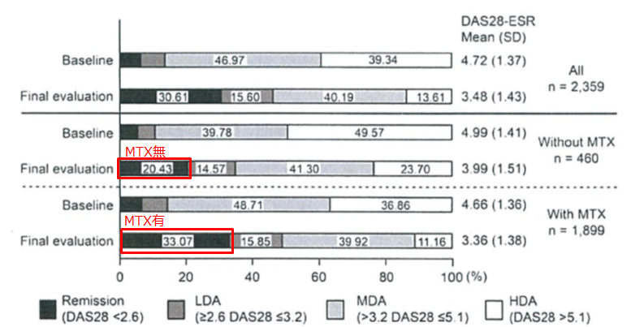
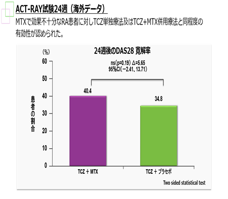

３．SIMはMTXが使用できない場合、単剤で初回から100㎎が使用できます
SIMはMTX非併用の場合、MTX併用に比べ効果が落ちる
【シンポニーPMS】24週後のDAS28寛解率
MTX無群：20.43％
MTX有群：33.07％

シンポニー全例調査Kanbori M, et al. Mod Rheumatol 2017 Jun 6:1-10
アクテムラはMTX併用の有無で有効性が変わらない

Dougados M, et al. Ann Rheum Dis.2013; 72 :43-50(MAPS:D85033)
SIMはMTXがないと有効性が低下する傾向であるがACTは変わらない
Monotherapyの高い有効性がACT-RAY・AMBITON・ADACTA等多くのStudyで確認されている